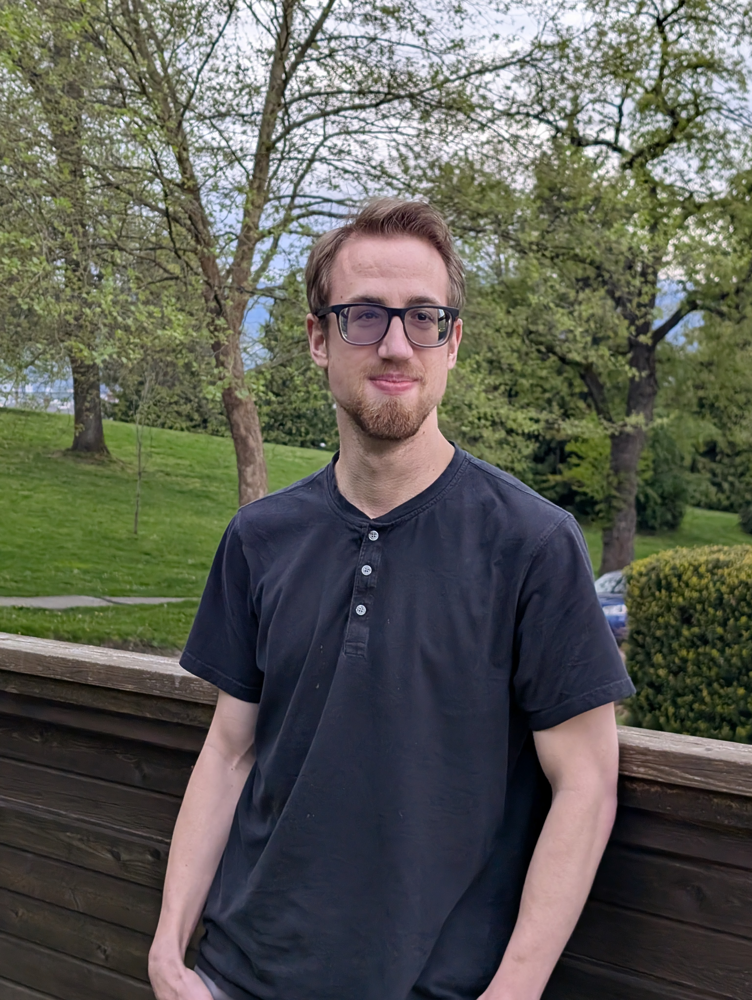

My name is Austin Preston, I’m a young, passionate video editor with a love for telling stories across a variety of genres and styles.
I love every step of the creative process, but I am especially passionate about post-production. My thoughts tend to lead to “How will this work in post?” Whether that be, thinking of how I want a certain scene to flow, or what I need to do to make this process as smooth as possible, I’m always thinking three steps ahead. I love seeing my vision come to life on the timeline. Assembling a story through editing has always been such a fascinating art form to me - there are an infinite number of solutions to any given problem.
Having attended Fanshawe College for both Broadcasting - Television and Film Production and Visual Effects and Editing for Contemporary Media, I have a wide range of skills and gained experience with productions of varying size, styles and genres. I will forever cherish the experience I had at Fanshawe and the projects I worked on, which have shaped me into the creative professional I am today.
After graduating, I moved back to my home province of British Columbia to fulfill my dream of becoming a full-time video editor. Since then, I have worked on several projects, including live music performances, promos, animated lyric videos and short films - including the multi-award-winning film “Ring”. I have also worked as a freelancer on live broadcasts, working on events such as the U Sports Final 8 Basketball Championship, the Canadian University Rowing Competition and Victoria Royals hockey games.
I have accomplished all of this while being visually impaired. My disability has been a challenge for me to overcome throughout my entire life. That being said, I have never let it stop me from doing anything. Being born and raised in BC, I participated in many outdoor activities, such as hiking, ATV riding, kayaking, biking and skiing. A goal of mine is to inspire other visually impaired individuals not to let their disability get in the way of anything and to prove that you don’t need perfect vision to succeed in a visually demanding field.